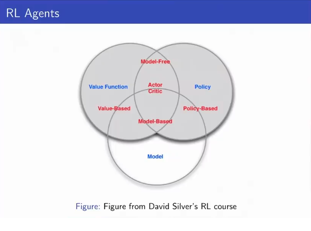
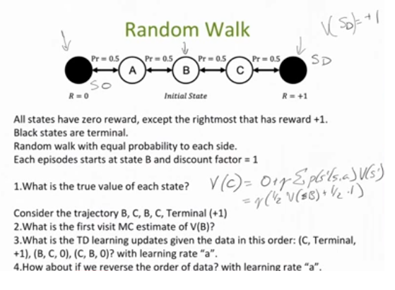
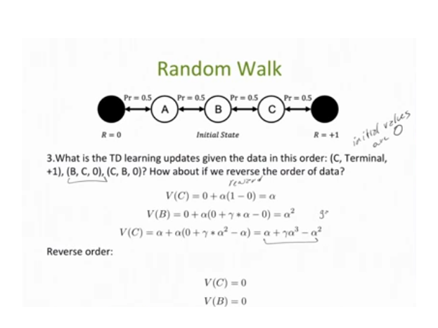

1.1 Intro: Reinforcement Learning
Uses: Robotics, games, healthcare, and also used as optimization technique for difficult problems
Core concepts in RL are: Optimization, Delayed Consequences, Exploration, Generalization.
A related problem, planning (inference time RL) requires: Optimization, Delayed Consequences, Generalization. Game Play is usually Planning (Go, Chess, etc)
In RL (vs the Planning Problem), the agent doesn’t know how the world works, so it must also interact with the world to implicitly/explicitly learn how the world works.
Imitation Learning: Optimization, Generalization, Delayed Consequences, but learning from an expert or experience of others. This reduces RL to supervised learning. Example: Andrew Ng flying a helicopter.
1.2 Key RL Problems:
Evaluation
- Estimate/predict the expected rewards from following a given policy
Control:
- Optimisation - find the best policy.
1.3 Markov Decision Processes
We generally model an RL agent as a Markov desision process. We assume the Markov assumption: The future is independent of past given present. Note that most real-life systems are not Markov, but we often represent it as Markov.
Types of MDPs
- The most simple MDP is Bandits: actions have no influence over next observations, no delayed rewards.
- Sometimes the model is a partially observable Markov Decision Process (POMDP), where the agent does not know everything about the world state, but instead manages its own state which consists of beliefs about the world state.
- Robotics and Controls applications typically assume deterministic transitions and reward.
- Web Advertising, medical applications, and many other domains assume stochastic transitions and reward.
1.4 Types of RL Agents
Model-based
- Have an explicit Model
- May or may not have policy and/or value function. If they don’t have one they compute it from the model.
Model-free
- Have an explicit value and/or policy function
- No model

Notes: Machine Teaching - interesting idea
Midterm Review
Topics:
- Planning, Policy Evaluation, Model Free Learning, Value Function Approximation, Imitation Learning, Policy Search
- Planning - you know the rewards and dynamics, but still could be very complicated (ie. Go)
- Learning - you don’t know the rewards and dynamics
- A model is sufficient for generating a policy, but you don’t have to have a model to generate a policy.
Bellman Backup Operator:
V(s)=maxa⎡⎣⎢⎢R(s,a)+γ∑s′∈Sp(s′|s,a)V(s′)⎤⎦⎥⎥
Model Based Control:
- Value iteration:
- Compute optimal value if time horizon = k (if you were only able to make k decisions)
- Increment k
- Policy Iteration:
- Policy Evaluation and Policy Improvement
- Compute infinite horizon value of a policy
- Use to select another (better) policy
- Closely related to Policy Gradient
- Note: Model-based refers to properties of an algorithm, that it only works in the tabular setting. Tabular setting refers to properties of the problem, that the full state-action transition matrix is specified.
Value iteration does not depend on initial starting point because it converges to a single fixed point. Value iteration and policy iteration will obtain the same value, but the policy they output may be different if multiple policies have the same value. The number of iterations for policu iteration on a tabular MDP with |A| actions and |S| states is bounded above by |A||S|, becuase its guarenteed to be monotonically improving (so if you visit every policy once, you're done).
Model-Based Policy Evaluation (Dynamic Programming):
- In Dynamic Programming Policy Evaluationwe assume we know the state and transition model, and use make the update Vπt(s)=𝔼π[rt+γVπi−1(st−1)|st=s], bootstrapping future rewards with the current estimate Vπi−1(st−1).
Model-free Policy Evaluation:
- In MC we sample the return over many episodes to estimate the exectation (Vπ(s)=Vπ(s)+α(Git−Vπ(s)).
- In TD learning, we sample and bootstap. We sample becuase we are using a single value estimate of st+1, and we bootstrap. (Vπ(st)=Vπ(st)+α([rt+γVπ(t+1s)]−Vπ(st))
- MC and TD are on-policy learning, since they make the update with respect to the action recommended by the policy. Q learning is off policy learning, since the update is taken with respect to the max action taken from the current state regarless of what the current policy recommends. In Q learning from the current state we always sample the best action, and then perform the TD learning update. Q(s,a)=(1−α)Q(s,a)+αQsamp(s,a);Qsamp(s,a)=r+γmaxa′Q(s′,a′). In Q learning you can even use random action samples to estimate the optimal Q, learning will still proceed because we are using the max.
Convergence Guarantees:
- In the tabular setting (full state action transition matrix given), MC, TD, and Q-learning all converge to the optimal policy.
- In the non-tabular setting:
-
Def: MSVE is MSE of value function: MSVE(w)=∑s∈Sd(s)(Vπ(s)−V̂ π(s,w))2
-
Monte Carlo with linear Value Function Approximation converges to min MSVE possible: MSVE(wMC)=minw∑s∈Sd(s)(Vπ(s)−V̂ π(s,w))2.
-
TD-learning with linear Value Function Approximation converges to 11−γ× min MSE possible: MSVE(wTD)=11−γminw∑s∈Sd(s)(Vπ(s)−V̂ π(s,w))2.
-
Note that in the above, if you can exactly represent the value in the current space, the min MSVE is 0, for both MC and TD.
-
Q-learing with function approximation can diverge, even with infinte data. — This is off-policy learning, since you are training with the maximizer. Even if you can exactly specify the value function in your feature space, TD learning is guarenteed to find it eventually, but Q learning is not guarenteed to (since Q learning is something like greedy TD-learning).
-
Convergence to the optimal policy in MC and TD are guarenteed under GLIE (Greedy in the Limit of Infinite Exploration) conditions, that 1. all state-action pairs are visited an infinite number of times. 2. Behavorial policy converges to the greedy policy. A simple GLIE strategy is e-greedy where e is reduced to 0 eventually.
-
Convergerence to the optimal Q-value is guarenteed for SARSA if the output policy satisfies GLIE and the step sizes satisfy . Convergerence to the optimal Q-value is guarenteed for Q learning
Challenges in DQN: Local updates (s,a,r,s’) are highly correlated, thus ‘target’ (aproximation to true value of s’) can change quickly and lead to instabilities. Fixes:
- Experience replay
- Fix target Q(w−) for a number of steps, then update
- Double Q
- Prioritized replay
- Dueling Q
A lot of work has helped with staibility, still no guarentees on convergence (yet).
Policy Gradient (aka REINFORCE)
Examples:

1. 0.25,0.5, 0.75
2. 1 (B gets updated once and the future rewards recieved is 1)
3. (See below)
V(C) = 0 + a(1-0) = a
V(B) = 0 + a(0 + y * a - 0) = a^2
V(C) = a + a(0+ y * a^2 - a) = a + y * a^3 - a^2
Reversed
Only the last C gets updated to V(C) = a
